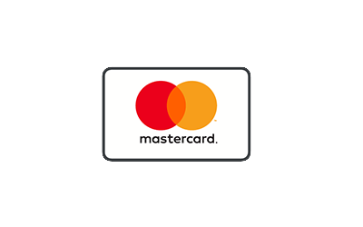
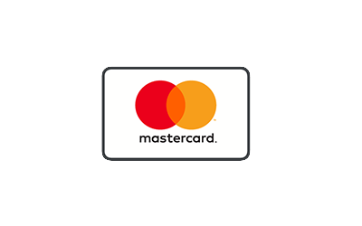
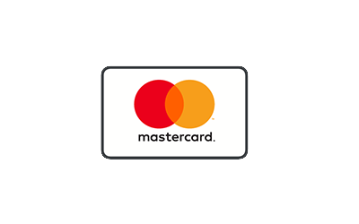

Mögliche Zahlungsarten bei Dienstleistungen
 


2Acc ist sowohl ein Internetcafe, wie auch ein Unternehmen welches
Leistungen im Bereich Reparatur für Smartphones, Haus- bzw
Fetznetztelefone, Computer, Drucker und sonstige technisch
basierte Geräte erbringt. Ebenfalls bieten wir auch die
Programmierung von Websiten an, welche Sie für Ihre eigenen
Zwecke wie auch Geschäftliche utzen können. Auf Sie trifft
in unser Unternehmen ein junges engagiertes Team zu, welches
jeden Ihrer Probleme und auch Wünschen nachgeht.
Wenn Sie auf
erfolgreich gute Arbeitsergebnisse suchen, sind Sie bei uns
vollkommen richtig!
Dienstleistungen für:
Mögliche Zahlungsarten bei Dienstleistungen
